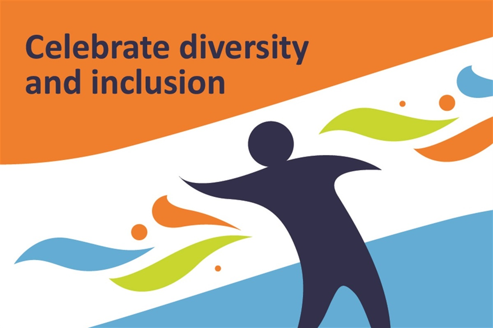

장애인
"장애인"이란 신체적·정신적 “장애인”이란 장애로 오랫동안 일상생활이나 사회생활에서 상당한 제약을 받는 자를 말한다. 장애인은 제1항에 따른 장애인 중 다음 각 호의 어느 하나에 해당하는 장애가 있는 자로서 대통령령으로 정하는 장애의 종류 및 기준에 해당하는 자를 말한다. “신체적 장애”란 주요 외부 신체 기능의 장애, 내부기관의 장애 등을 말한다. “정신적 장애”란 발달장애 또는 정신 질환으로 발생하는 장애를 말한다.
영어로는 일반적으로 Disabled person / Disability 등의 용어가 쓰인다.  최근에는 정치적 올바름 문제로 Mentally Challenged Person(정신장애인)/Physically Challenged Person(육체적 장애인)이라는 표현도 자주 쓰이는데 표현에 대한 논란이 크며, disabled 이전에 등장한 handicapped도 있으나 차별적 용어로 간주된다. 영어권의 장애인들은 handicapped라는 용어를 모욕으로 느끼기는 경우가 있다. 그들은 다리에 장애가 있는 경우 휠체어를 탐으로써 보정할 수 있기 때문에 handicapped가 아니라고 생각한다. 2019년 현재 유엔등 국제기구에서는 장애를 강조하고 집합적 성격인 the Disabled 대신 장애보다는 개인을 강조하며 개별적 권리를 중시하는 의미로 Persons with Disabilities 를 사용중이다. 2019년 7월부터 한국장애인고용공단의 영문 명칭도 Korea Employment Agency for the Disabled에서 Korea Employment Agency for Persons with Disabilities으로 변경했다